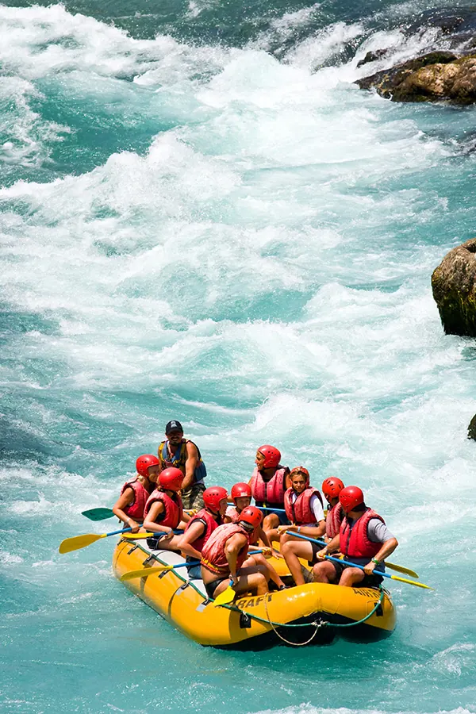
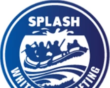
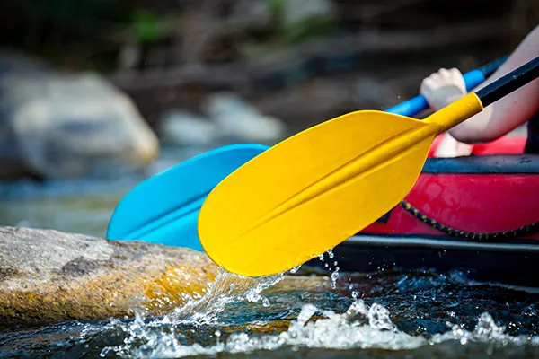
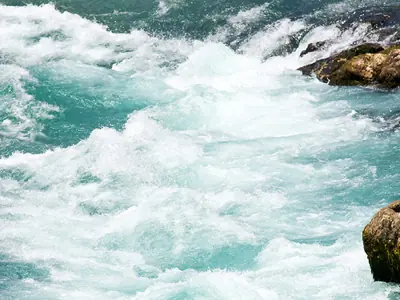
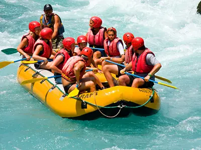
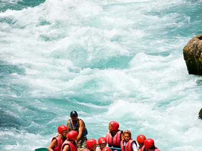
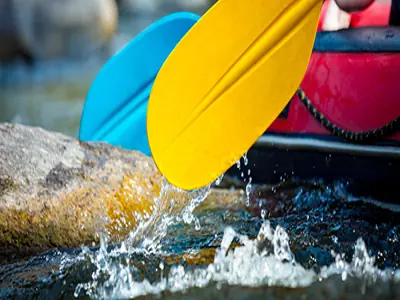

At Adventure Unplugged™, our mission is to help people disconnect from daily screens and reconnect with the raw power of nature through safe, exhilarating, and unforgettable white water rafting journeys.



At Adventure Unplugged™, our mission is to help people disconnect from daily screens and reconnect with the raw power of nature through safe, exhilarating, and unforgettable white water rafting journeys.
Founded in 2012 by a crew of passionate river guides, Adventure Unplugged™ started with just two rafts and a simple belief: the best memories are made offline. What began as weekend canyon runs for friends and family has grown into a premier white water outfitter, guiding thousands of paddlers through thrilling rapids while championing river conservation and outdoor safety.



